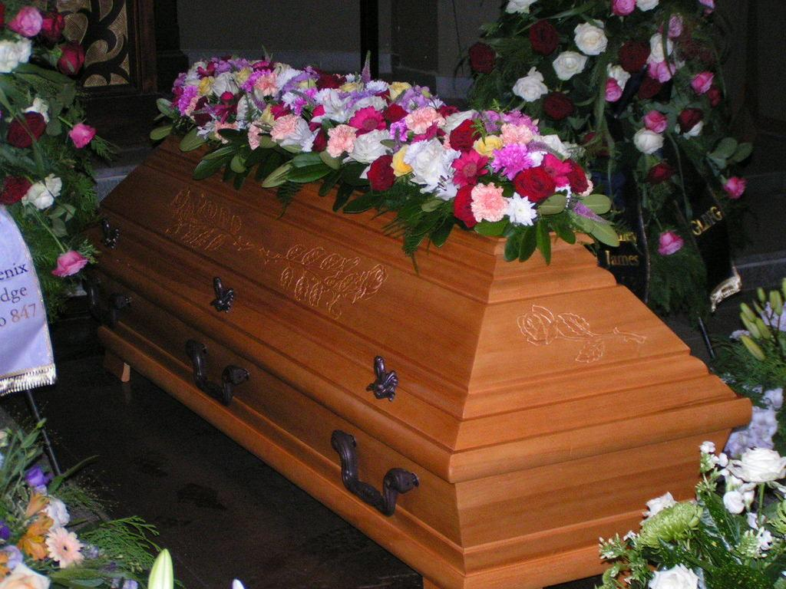
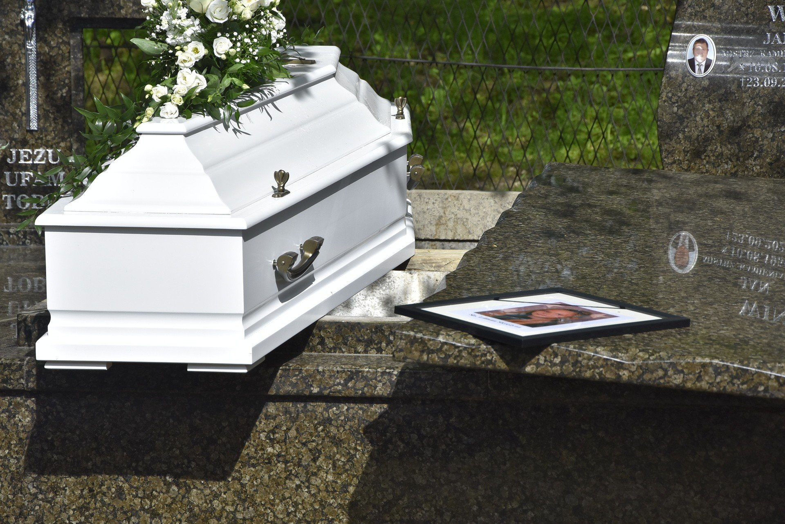

Dubová rakev:

D4 tmavá
Luxusní dubová rakev s ozdobným kelováním a vypalovaným motivem, v tmavém odstínu, určená pro pohřbení do hrobek. Rakev dodáváme s výbavou i bez, možno doplnit o zinkovou vložku. Elegantní a decentní vzhled rakve je umocněn jemným profilováním a zároveň zajímavým ozdobným reliéfním vypalováním kolem víka rakve, použité tmavé mořidlo i lak zvýrazní strukturu dubového dřeva a dodá rakvi velmi zajímavý a masivní vzhled.
Obřadní rakev:
Obřadová rakev N1St Green Line Eco
Dřevěná obřadová rakev s parafínovým nástřikem, a viditelnou strukturou dřeva si získá vyznavače pro tuto dobu velmi oblíbených přírodních trendů. Parafínový nátěrový film decentně zvýrazňuje přirozenou kresbu dřeva, má sametový matný vzhled a celkově podtrhuje přírodní charakter dřeva. Nekomplikované provedení rakve je zvýrazněno tmavým ozdobným vypálením s obloučkovým reliéfem. Rakev dodáváme s bavlněnou výbavou, čtyřmi ozdobnými šrouby a je určena pro kremační či obřadové rozloučení. Rakve jsou vyráběny z masivního topolového dřeva. Pro církevní obřad je možno alternativně dodat dřevěný kříž.
Luxusní rakev:
Exkluzivní rakev E1 Perleť Champagne
Rakev z exkluzivní řady E1 v jemném zlatavém tónu šampaňského vína se vyznačuje unikátním sofistikovaným designem s výraznými elegantními detaily dvou tmavých perleťových intarzií po obvodu víka. Rakev dodáváme v kompletu s výbavou. Rakev je určena jak pro obřadové, tak pro kremační rozloučení. Součástí rakve jsou čtyři ozdobné šrouby. Rakve jsou vyráběny z masivního topolového dřeva. Pro církevní obřad je možno alternativně dodat perleťový kříž či jiné perleťové doplňky dle naší nabídky.